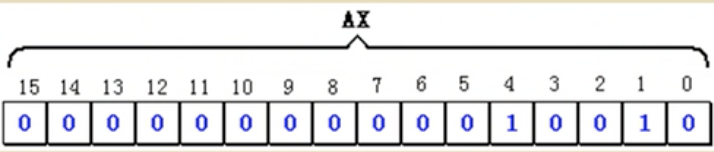
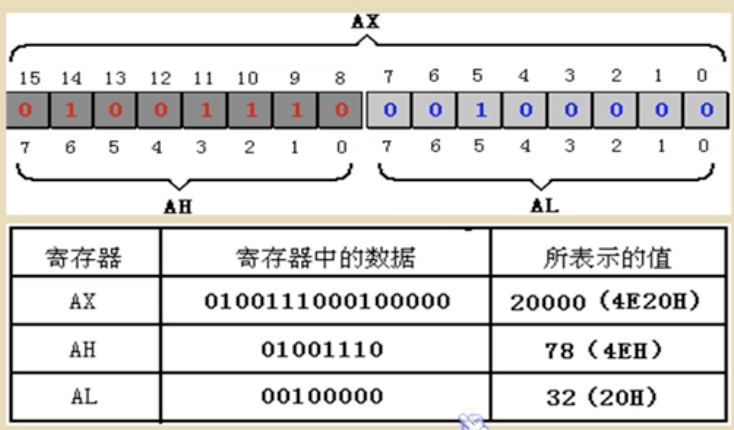

CPU 概述
三个部件 靠内部总线相连
运算器
逻辑控制器
寄存器
8086CPU 16位 可以存放两个字节 有14个寄存器
AX BX CX DX SI DI SP BP IP CS SS DS ED PSW
其中AX BX CX DX为通用寄存器
例如 数据18 在AX中存放形式为

为兼容上一代寄存器 四个通用寄存器可以分为两个独立的8位寄存器
AX → AH AL
BX → BH BL
CX → CH CL
DX → DH DL

关于数制转换
例如 十进制 20000
0100111000100000B
0100 1110 0010 0000B 十六进制切分
0 100 111 000 100 000B 八进制切分
几条汇编指令
不区分大小写 从后向前的顺序
指令 控制CPU完成的操作 高级语言语法描述
mov ax,18 将18送入AX AX = 18
mov ah,78 将78送入AH AH = 78
add ax,8 将寄存器AX中的数值加8 AX = AX + 8
mov ax,bx 将寄存器BX中数据送入寄存器AX AX = BX
add ax,bx 将AX BX中内容相加,结果存入AX AX = AX + BX
mov ah,0
add al,85H
课后题
1 写出执行后寄存器中的值
mov ax,62627 AX=
mov ah,31H AX=
mov al,23h AX=
add ax,ax AX=
mov bx,826CH BX=
mov cx,ax CX=
mov ax,bx AX=
add ax,bx AX=
mov al,bh AX=
mov ah,bl AX=
add ah,ah AX=
add al,6 AX=
add al,al AX=
mov ax,cx AX=
2 只能使用mov,add指令 最多四条,计算2的4次方
物理地址
段地址+偏移地址=物理地址
16位结构的CPU
...